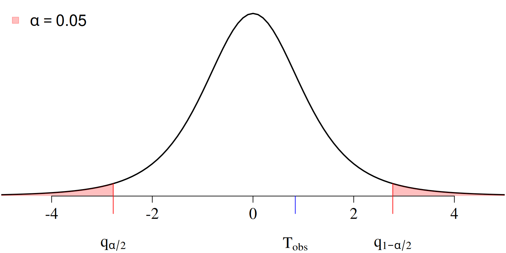
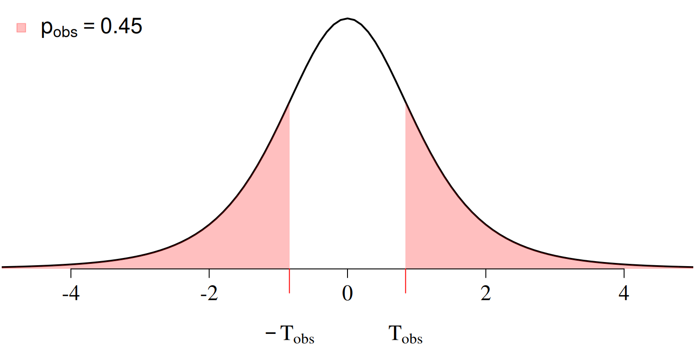
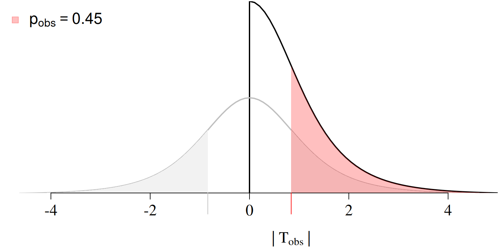
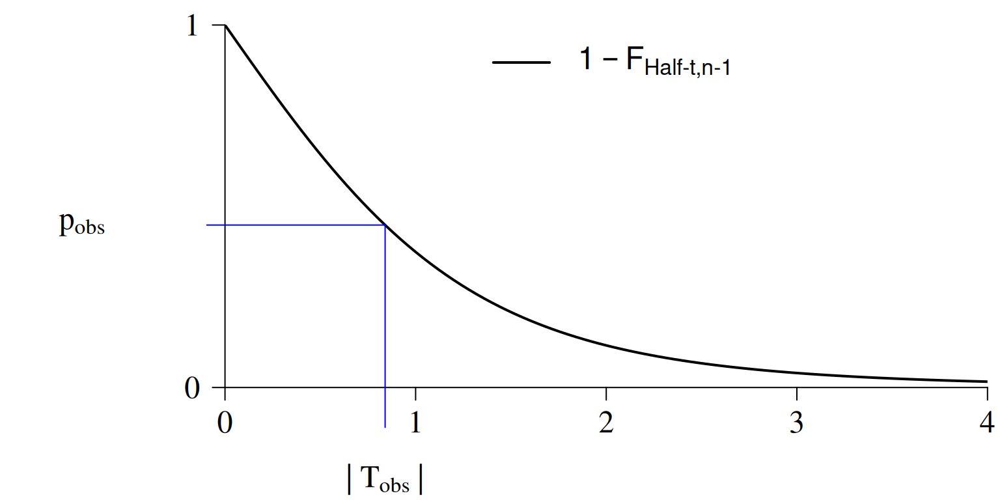
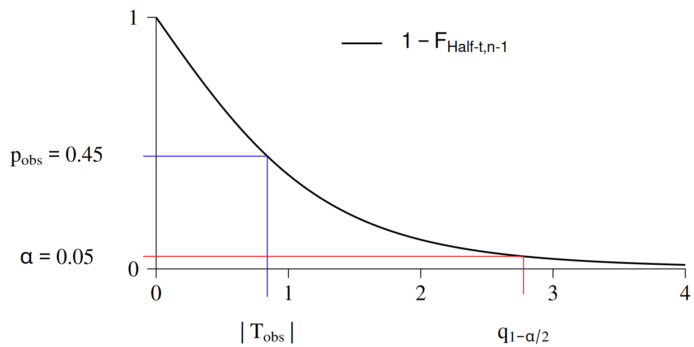
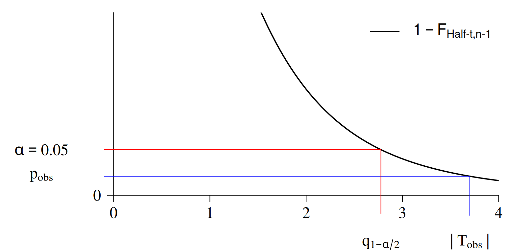

1 \(\mathrm{p}\)-Values: Challenges for Hypothesis Testing
\[ \require{color} %% Colorbox within equation-environments: \newcommand{\highlight}[2][yellow]{\mathchoice% {\colorbox{#1}{$\displaystyle#2$}}% {\colorbox{#1}{$\displaystyle#2$}}% {\colorbox{#1}{$\displaystyle#2$}}% }% \]
1.1 Introduction
🎯 Lecture Goals
In this lecture, we’ll tackle three key questions:
- How do \(\mathrm{p}\)-values actually work?
- Why can \(\mathrm{p}\)-values be tricky or even misleading in hypothesis testing?
- What is good practice when working with \(\mathrm{p}\)-values?
We’ll explore these questions using the two-sided \(t\)-test as our main example.
💻 Example: Marketing Campaign
Imagine a company runs a marketing campaign in \(n = 5\) stores and measures sales before and after the campaign.
| Store | Sales Before | Sales After | Difference (After \(-\) Before) |
|---|---|---|---|
| \(1\) | \(4.86\) | \(5.50\) | \(X_{1,obs}=0.64\) |
| \(2\) | \(4.96\) | \(4.24\) | \(X_{2,obs}=-0.72\) |
| \(3\) | \(6.01\) | \(5.78\) | \(X_{3,obs}=-0.23\) |
| \(4\) | \(4.84\) | \(5.75\) | \(X_{4,obs}=0.91\) |
| \(5\) | \(2.84\) | \(3.90\) | \(X_{5,obs}=1.06\) |
Figure 1.1 visualizes the observed differences \(X_{i,\mathrm{obs}},\) \(i=1,\dots,5.\)
We want to know:
Research question: Was the marketing campaign successful? Did it show a tendency (location-shift) toward significantly higher or lower sales?
Statistical question: Is the mean \(\mu\) of \(X_1,\dots,X_n\) different from zero?
Formal test: \(\hspace{1cm}H_0\colon \mu = 0\quad\) versus \(\quad H_1\colon \mu \neq 0\)
📖 Quick Recap: Two-Sided \(t\)-Test, Critical Values, and Decision
Refresher: Two-Sided \(t\)-Test
We test
The \(t\)-statistic is: \[ \mathrm{T} = \frac{\bar{X} - 0}{S/\sqrt{n}}\overset{H_0}{\sim} t_{n-1}, \] where
- \(\bar{X}=\frac{1}{n}\sum_{i=1}^n X_i\) is the sample mean, and
- \(S= \sqrt{\frac{1}{n-1}\sum_{i=1}^n(X_i-\bar{X})}\) is the sample standard deviation.
Observed (obs) Statistic (Marketing Campaign Data):
\[ \mathrm{T}_{\mathrm{obs}} = \frac{\bar{X}_{\mathrm{obs}} - 0}{S_{\mathrm{obs}}/\sqrt{5}} = 0.84 \]
- \(\bar{X}_{\mathrm{obs}}=\frac{1}{5}\sum_{i=1}^5 X_{i,\mathrm{obs}} = 0.30\)
- \(S_{\mathrm{obs}} = \sqrt{\frac{1}{5-1}\sum_{i=1}^5(X_{i,\mathrm{obs}}-\bar{X}_{\mathrm{obs}})} = 0.80\)
This observed \(t\)-statistic value tells us how far the mean difference is from \(0,\) measured in units of the estimated standard error.
Refresher: Critical Values
In case of the two-sided \(t\)-test, the critical values are the \((\alpha/2)\)- and \((1 - \alpha/2)\)-quantilesof the \(t\)-distribution with \(n-1\) degrees of freedom, where \(0<\alpha<1\) denotes the significance level. Figure 1.2 shows the null distribution (the \(t_{n-1}\) density) and the rejection regions for \(\alpha = 0.05\).

Refresher: Test Decision
- Our observed \(t\)-statistic is \(\textrm{T}_{\textrm{obs}}=0.84\)
- The critical values are \(\mathrm{q}_{\alpha/2} = -2.78\) and \(\mathrm{q}_{1-\alpha/2} = 2.78\).
Since \(\textrm{T}_{\textrm{obs}}\) is not in the rejection regions (Figure 1.2) \[\begin{align*} \textrm{T}_{\textrm{obs}}=0.84 &\;\not\in\;]-\infty, \mathrm{q}_{\alpha/2}[\\ \textrm{T}_{\textrm{obs}}=0.84 &\;\not\in\;]\,\mathrm{q}_{1-\alpha/2},\infty\,[, \end{align*}\] we fail to reject \[ H_0\colon\mu = 0 \] at the significance level \(\alpha = 0.05\).
1.2 The Two-Sided \(\mathrm{p}\)-Value
Figure 1.3 shows the density function of the \(t_{\operatorname{df}}\) distribution with \(\operatorname{df}=n-1=4;\) i.e., the null-distribution for our marketing campaign example.
The light-red area in Figure 1.3 equals the observed \(\mathrm{p}\)-value \(\mathrm{p}_{\mathrm{obs}}=0.45\) for the observed value of the \(t\)-test statistic \(\mathrm{T}_{\mathrm{obs}}=0.84.\)

Note that \[ \mathrm{T}=\frac{\bar{X}-0}{S/\sqrt{n}}\overset{H_0}{\sim}t_{n-1} \] implies that the absolute value \(|T|\) of the random \(t\)-statistic is Half-\(t_{n-1}\) distributed \[ |\mathrm{T}|\overset{H_0}{\sim}\text{Half-}t_{n-1}. \]

Two-sided \(t\)-test: \[\begin{align*} \mathrm{p}_{\mathrm{obs}} & = \mathrm{P}\big(\,|\mathrm{T}|\,\geq |\mathrm{T}_{\mathrm{obs}}|\;\big|\;H_0\;\text{is true}\big)\\[1ex] & = 1 - \mathrm{P}\big(\highlight{|\mathrm{T}|}\leq |\mathrm{T}_{\mathrm{obs}}|\;\big|\highlight{H_0\;\text{is true}}\big)\\[1ex] & = 1 - \highlight{\mathrm{F}_{\,\text{Half-}t,n-1}}\big(|\mathrm{T}_{\mathrm{obs}}|\big), \end{align*}\] where \(\mathrm{F}_{\,\text{Half-}t,n-1}\) denotes the cdf of the Half-\(t\) distribution with \(\operatorname{df}=n-1\)
The \(\textrm{p}\)-value \(\textrm{p}{\mathrm{obs}}\) tells us the probability of observing a value of \(|\mathrm{T}|\) as extreme as (or more extreme than) \(|\mathrm{T}_{\mathrm{obs}}|\) under \(H_0\).
That is, \(\textrm{p}{\mathrm{obs}}\) measures how extreme the absolute value of our observed test statistic \(|\mathrm{T}{\mathrm{obs}}|\) is if the null hypothesis \(H_0\) were true.
A very small \(\textrm{p}_{\mathrm{obs}}\) suggests that such an observation would be highly unlikely if \(H_0\) were true, so we may decide that \(H_0\) does not provide a plausible explanation for the data.

library("extraDistr")
df <- 5-1
## 1 minus the distribution function of the Half-t
p_obs <- 1 - pht(q = abs(T_obs), nu = df)1.2.1 Test Decision based on the \(\mathrm{p}\)-Value
We reject \(H_0\colon \mu =0\) and accept \(H_1\colon \mu \neq 0\) at the significance level \(0<\alpha<1\) if \[ \highlight{\mathrm{p}_{\mathrm{obs}} < \alpha.} \]
We fail to reject \(H_0\) at the significance level \(0<\alpha<1\) if \[ \highlight{\mathrm{p}_{\mathrm{obs}} \geq \alpha.} \]
Marketing campaign data:
- \(|\mathrm{T}_\mathrm{obs}|=0.84\)
- \(\alpha = 0.05\)
- \((1-\alpha/2)\)-quantile of \(t_{4}\colon\) \(\mathrm{q}_{1-\alpha/2}=2.78\)

We fail to reject \(H_0\colon\mu = 0\). That is, we have no statistical evidence that the marketing campaign showed a tendency toward significantly higher or lower sales.
1.2.2 Equivalent Test Decisions
- Critical values: Reject \(H_0\colon \mu =0\) if \(\displaystyle|\mathrm{T}_{\mathrm{obs}}| > q_{1-\alpha/2}\), where \(q_{1-\alpha/2}\) denotes the \((1-\alpha/2)\)-quantile of the \(t_{\operatorname{df}}\) distribution.

1.3 \(\mathrm{p}\)-Values: Challenges for Hypothesis Testing
While the \(\mathrm{p}\)-value can be a useful statistical measure, it is commonly misused and misinterpreted. (Wasserstein and Lazar (2016), Wasserstein, Schirm, and Lazar (2019))
“Scientific method: Statistical errors.” Nuzzo (2014)
ScienceNews (Siegfried 2010): “It’s science’s dirtiest secret: The ‘scien- tific method’ of testing hypotheses by statistical analysis stands on a flimsy foundation.”
References
Nuzzo, Regina. 2014. “Scientific Method: Statistical
Errors.” Nature 506 (7487).
Wasserstein, Ronald L, and Nicole A Lazar. 2016. “The ASA
Statement on p-Values: Context, Process, and
Purpose.” The American Statistician. Taylor &
Francis.
Wasserstein, Ronald L, Allen L Schirm, and Nicole A Lazar. 2019.
“Moving to a World Beyond "p< 0.05".” The American
Statistician. Taylor & Francis.